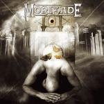

|
|
||
Morifade : Domination (2004) |
|

http://www.morifade.com |
1. Parallels 5:00 |
8.4/10 |
|
Domination es el último disco del grupo sueco de power metal Morifade. Aunque sus trabajos suelen estar bien considerados por la crítica, tengo la impresión, subjetiva he de admitirlo, de que no son todo lo conocidos que debieran ser. Una buena combinación de recursos clásicos y progresivos de heavy metal, y un adecuado reparto de melodía y fuerza, hacen de ésta una muy buena banda y el último disco lo demuestra. El arranque del disco es muy bueno, ya que "Parallels" incorpora todo lo que se puede esperar en un gran tema: doble bombo, cambios de ritmo, melodía, aportaciones importantes pero mesuradas de los teclados, coros, un solo de guitarra relativamente original y un estribillo pegadizo. Un principio lento para "A Silent Revolution" deja paso a un interesante duelo entre guitarras y teclados por el protagonismo de la canción, en el que se acaban imponiendo las guitarras, en un tema de tiempo medio y melodía interesante. En "The Second Coming" de nuevo encontramos una estrecha colaboración entre guitarras y teclados en la base melódica, sobre un ritmo original y cambiante, y otro estribillo llamativo. "Words I Never Speak" posee una atmósfera triste y ligeramente opresiva, iluminada de vez en cuando por destellos de la voz y de los teclados. En "Clarity" de nuevo el doble bombo marca el camino, sobre el la guitarra marca una línea melódica sencilla adornada por algunos coros bastante espectaculares y que culmina en el potente estribillo. En "Panopticon" destacan sobre todo el duelo de voces, solista frente a coros, del estribillo y el marcado ritmo que acompasa con firmeza teclados y guitarras. El estilo más épico de Morifade despunta en "The Rising" con sus majestuosos coros, que contrastan con la relativa desnudez de la voz en unos pocos pasajes. Un sonido más progresivo aparece en "Erase", con sintetizadores más atrevidos, una estructura de canción menos lineal, más experimental. "Memory's End" recupera el tono más clásico, con guitarras agresivas pero contenidas, y la melodía a cargo de las voces. "Eyes of the Blind" es una buena canción, de base melódica compleja a cargo de los teclados, y estribillo pegadizo repetido hasta la saciedad. En resumen, un buen disco, donde el metal clásico y progresivo se funden armoniosamente, donde también aparecen algunos elementos épicos y que tiene aportaciones originales de teclados y guitarras. |
||
- Crítica escrita por Rubén Béjar - |
||